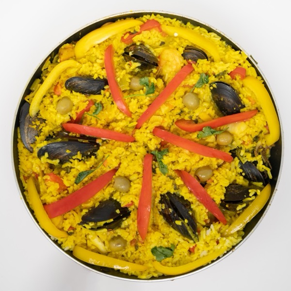

<!doctype html>
<html lang="en">
<head>
<meta charset="utf-8">
<title>OpenWeights ad</title>
<style>
  @font-face { font-family: Display; src: url(assets/fonts/schibsted_grotesk.ttf); font-weight: 400 900; }
  @font-face { font-family: Body; src: url(assets/fonts/hanken_grotesk.ttf); font-weight: 100 900; }
  @font-face { font-family: Mono; src: url(assets/fonts/geist_mono.ttf); font-weight: 100 900; }
  /* The app's light palette (core/designsystem Color.kt). Lime is a fill carrying ink, never text on white. */
  :root { --canvas: #FFFFFF; --raised: #F4F5F3; --raised-2: #E7E8E4; --ink: #052B42; --dim: #52555B; --lime: #E0FF4F; --poor: #E5484D; --bezel: #0D0E10; }
  * { box-sizing: border-box; margin: 0; padding: 0; }
  html, body { width: 1920px; height: 1080px; overflow: hidden; background: #000; }
  body { font-family: Body, sans-serif; color: var(--ink); -webkit-font-smoothing: antialiased; font-kerning: normal; }
  #stage { position: absolute; inset: 0; overflow: hidden; background: var(--canvas); }
  .scene { position: absolute; inset: 0; overflow: hidden; visibility: hidden; background: var(--canvas); }
  .abs { position: absolute; left: 0; top: 0; will-change: transform, opacity; transform-origin: 0 50%; }
  .h { font-family: Display, sans-serif; font-weight: 700; letter-spacing: -0.04em; line-height: 0.98; color: var(--ink); white-space: nowrap; }
  .sub { font-family: Body, sans-serif; font-weight: 500; letter-spacing: -0.01em; color: var(--dim); white-space: nowrap; }
  .mono { font-family: Mono, monospace; font-weight: 500; letter-spacing: -0.01em; white-space: nowrap; }
  .hl { position: relative; display: inline-block; z-index: 0; }
  .hl::before { content: ''; position: absolute; left: -0.07em; right: -0.07em; top: 0.12em; bottom: 0.04em; background: var(--lime);
    border-radius: 0.12em; z-index: -1; transform-origin: left center; transform: scaleX(var(--hl, 1)); }
  .phone { position: absolute; left: 0; top: 0; border-radius: 66px; background: var(--bezel); padding: 14px; transform-origin: 0 0;
    box-shadow: 0 20px 48px rgba(5,43,66,0.12), 0 4px 10px rgba(5,43,66,0.10), 0 0 0 2px #2A2C30 inset; will-change: transform; }
  .phone .screen { position: relative; overflow: hidden; border-radius: 52px; background: #fff; }
  .phone .screen img { position: absolute; left: 0; top: 0; width: 100%; display: block; }
  /* A crop of the same recorded frame, magnified: the evidence, readable at a feed's width. */
  .crop { position: absolute; left: 0; top: 0; overflow: hidden; border-radius: 22px; background: #fff;
    box-shadow: 0 16px 40px rgba(5,43,66,0.14), 0 0 0 2px var(--raised-2); will-change: transform, opacity; transform-origin: 0 50%; }
  .crop img { position: absolute; left: 0; top: 0; display: block; }
  .photo { position: absolute; left: 0; top: 0; border-radius: 20px; overflow: hidden; box-shadow: 0 16px 40px rgba(5,43,66,0.18); transform-origin: 0 50%; }
  .photo img { width: 100%; height: 100%; display: block; object-fit: cover; }
  .chip { position: absolute; left: 0; top: 0; display: inline-flex; align-items: center; height: 54px; padding: 0 24px; border-radius: 999px;
    font: 500 26px Mono, monospace; white-space: nowrap; background: var(--raised); color: var(--dim); box-shadow: 0 0 0 1.5px var(--raised-2) inset; transform-origin: 0 50%; }
  .chip.ink { background: var(--ink); color: #fff; box-shadow: none; }
  .tag { position: absolute; left: 0; top: 0; display: inline-flex; align-items: center; height: 52px; padding: 0 22px; border-radius: 999px;
    font: 600 28px Body, sans-serif; white-space: nowrap; transform-origin: 100% 50%; }
  .tag.good { background: var(--ink); color: #fff; } .tag.mid { background: var(--raised); color: var(--ink); box-shadow: 0 0 0 1.5px var(--raised-2) inset; }
  .tag.poor { background: var(--poor); color: #fff; }
  .pill { position: absolute; left: 0; top: 0; display: inline-flex; align-items: center; height: 84px; padding: 0 40px; border-radius: 999px;
    font: 700 38px Body, sans-serif; white-space: nowrap; background: var(--lime); color: var(--ink); transform-origin: 0 50%; }
  .tap { position: absolute; width: 56px; height: 56px; margin: -28px 0 0 -28px; border-radius: 50%; border: 5px solid var(--ink); background: rgba(224,255,79,0.55); }
  .qrcard { position: absolute; left: 0; top: 0; width: 330px; padding: 30px; border-radius: 30px; background: #fff; text-align: center;
    box-shadow: 0 20px 48px rgba(5,43,66,0.12), 0 0 0 2px var(--raised-2) inset; transform-origin: 50% 50%; }
  .qrcard img { width: 270px; height: 270px; display: block; }
  .qrcard p { margin-top: 14px; font: 600 24px Body, sans-serif; }
  .fine { position: absolute; left: 0; top: 0; font: 400 26px/1.45 Body, sans-serif; color: var(--dim); white-space: nowrap; }
  .wipe { position: absolute; top: -10%; height: 120%; width: 2200px; background: var(--lime); z-index: 90; pointer-events: none; }
</style>
</head>
<body>
<div id="stage"></div>
<script src="assets/data.js"></script>
<script>
// ---------------------------------------------------------------------------------------
// Time: 128 BPM. Scenes start on beats; the moments inside them come from out/music.json, which
// music.py derives from the recordings' own marks, so a sound you hear is a thing you see.
const BPM = 128, BEAT = 60 / BPM, BAR = 4 * BEAT;
const D = window.AD_DATA, M = D.music.moments, S = D.music.scenes, LENGTH = D.music.length;
const clamp = (x, a = 0, b = 1) => Math.min(b, Math.max(a, x));
const prog = (t, a, b) => clamp((t - a) / (b - a));
const lerp = (a, b, x) => a + (b - a) * x;
const E = {
  emph: (x) => (x >= 1 ? 1 : 1 - Math.pow(1 - x, 4)),
  outExpo: (x) => (x >= 1 ? 1 : 1 - Math.pow(2, -10 * x)),
  inOut: (x) => (x < 0.5 ? 4 * x * x * x : 1 - Math.pow(-2 * x + 2, 3) / 2),
  outBack: (x) => { if (x <= 0) return 0; const c1 = 1.5, c3 = c1 + 1; return 1 + c3 * Math.pow(x - 1, 3) + c1 * Math.pow(x - 1, 2); },
};
const A = D.air, P = D.paella, Q = D.poco;
// Clip time = page time + offset: each recorded moment lands on the music's moment for it.
const AIR_OFF = A.airplane_on - M.air_tap;
const CHAT_OFF = A.sent - M.chat_send;
const PHOTO_A = P.sent - M.photo_send;
const PHOTO_B = (P.first_text - 0.2) - M.photo_cut;   // 0.2 s of "Reading the prompt", then the words
const POCO_OFF = (Q.open + 0.3) - S.fit;   // the scene opens on the model's page, already loaded

function el(tag, cls, parent, html) { const e = document.createElement(tag); if (cls) e.className = cls; if (html !== undefined) e.innerHTML = html; parent.appendChild(e); return e; }
function put(e, { x = 0, y = 0, s = 1, o = 1 } = {}) { e.style.transform = `translate(${x}px, ${y}px) scale(${s})`; e.style.opacity = o; }
// Slam: on its beat an element is already there, a touch large, and settles within a sixth of a
// second. It never eases in after its sound.
function slam(e, t, at, { x, y, from = 1.025, d = 0.16, o = 1, out = null } = {}) {
  if (t < at) { e.style.opacity = 0; return; }
  const k = E.outExpo(prog(t, at, at + d));
  const gone = out === null ? 0 : E.emph(prog(t, out, out + 0.14));
  put(e, { x, y: y - gone * 24, s: lerp(from, 1, k), o: o * (1 - gone) });
}
function lime(e, t, at) { e.querySelectorAll('.hl').forEach((h) => h.style.setProperty('--hl', E.emph(prog(t, at, at + 0.25)).toFixed(4))); }
function text(parent, html, cls, size) { const e = el('div', 'abs ' + cls, parent, html); e.style.fontSize = size + 'px'; return e; }
function tile(parent, size) {
  const t = el('div', 'abs', parent);
  t.style.width = size + 'px'; t.style.height = size + 'px'; t.style.borderRadius = Math.round(size * 0.28) + 'px'; t.style.background = 'var(--ink)'; t.style.transformOrigin = '50% 50%';
  const L = size * 50 / 108, thick = L * 0.22, pitch = L * 0.32, x0 = size * 29 / 108, yc = size / 2;
  const bars = [1, 0.7, 0.41].map((f, i) => {
    const b = el('div', 'abs', t);
    b.style.left = x0 + 'px'; b.style.top = (yc + (i - 1) * pitch - thick / 2) + 'px'; b.style.width = L * f + 'px'; b.style.height = thick + 'px';
    b.style.borderRadius = thick / 2 + 'px'; b.style.background = 'var(--lime)'; b.style.transformOrigin = 'left center';
    return b;
  });
  return { t, bars };
}
// The mark's bars land on the sonic logo's three notes, a beat apart.
function build(bars, t, at) { bars.forEach((b, i) => { const p = prog(t, at + i * BEAT, at + i * BEAT + 0.28); b.style.transform = `scaleX(${p <= 0 ? 0 : E.outBack(p)})`; }); }

const pending = [];
function frameSrc(clip, ct) { const c = D.clips[clip]; const i = clamp(Math.round(ct * c.fps), 0, c.count - 1) + 1; return `frames/clips/${clip}/${String(i).padStart(4, '0')}.jpg`; }
function show(img, src) { if (img.dataset.src !== src) { img.dataset.src = src; img.src = src; pending.push(img.decode().catch(() => { throw new Error('frame failed: ' + src); })); } }
const QDC = [1440, 3200], POCO = [1280, 2772];
function phone(parent, w, src = QDC) {
  const p = el('div', 'phone', parent), sc = el('div', 'screen', p), h = Math.round(w * src[1] / src[0]);
  sc.style.width = w + 'px'; sc.style.height = h + 'px';
  return { p, sc, img: el('img', '', sc), w, h, src };
}
function statusMask(ph) { const m = el('div', 'abs', ph.sc); m.style.width = '100%'; m.style.height = Math.round(ph.h * 0.05) + 'px'; m.style.background = '#fff'; m.style.zIndex = 2; }
const lens = (ph, px, py, tx, ty, s) => ({ x: tx - (14 + px * ph.w / ph.src[0]) * s, y: ty - (14 + py * ph.h / ph.src[1]) * s, s });
const mix = (a, b, k) => ({ x: lerp(a.x, b.x, k), y: lerp(a.y, b.y, k), s: lerp(a.s, b.s, k) });
const at = (ph, px, py, cam) => [cam.x + (14 + px * ph.w / ph.src[0]) * cam.s, cam.y + (14 + py * ph.h / ph.src[1]) * cam.s];
// A crop card: the recorded frame's region (rx, ry, rw, rh in recording pixels) at k page px per
// recording px.
function crop(parent) { const c = el('div', 'crop', parent); return { c, img: el('img', '', c) }; }
function frameCrop(cr, src, srcSize, rx, ry, rw, rh, k) {
  cr.c.style.width = rw * k + 'px'; cr.c.style.height = rh * k + 'px';
  cr.img.style.width = srcSize[0] * k + 'px'; cr.img.style.left = -rx * k + 'px'; cr.img.style.top = -ry * k + 'px';
  show(cr.img, src);
}

const stage = document.getElementById('stage');
const scenes = [];
function scene(from, to, make) { const root = el('div', 'scene', stage); scenes.push({ root, from, to, draw: make(root) }); }
const wipeEl = el('div', 'wipe', stage);
const X = 128;   // the copy column; evidence starts at about 1120

// ---------------------------------------------------------------------------------------
// One phone, offline: Airplane mode, a question, a photo.
const EVENT_EL = {};   // the element each picture event shows, for the visibility check
const EVENT_BARS = {};   // the mark's bar each logo note draws
scene(S.hook, S.logo, (root) => {
  const PW = 430, ph = phone(root, PW), tapEl = el('div', 'tap', root);
  const status = crop(root), photoCrop = crop(root);
  const pic = el('div', 'photo', root, '');
  const t1 = text(root, 'Airplane mode.', 'h', 112), t2 = text(root, 'Still <span class="hl" style="--hl:0">answers</span>.', 'h', 112);
  const t3 = text(root, 'Show it a photo.', 'h', 112), t4 = text(root, 'Still <span class="hl" style="--hl:0">offline</span>.', 'h', 112);
  const c1 = el('div', 'chip', root, 'Qwen3-4B · on this phone'), c2 = el('div', 'chip', root, 'Qwen2.5-VL-3B · on this phone');
  const q1lab = text(root, 'Its answer, word for word', 'mono', 30), q1 = text(root, '“¿Puedo ver la cuenta,<br>por favor?”', 'h', 84);
  const q2lab = text(root, 'Its answer, word for word', 'mono', 30), q2 = text(root, '“This is a dish<br>of paella”', 'h', 84);
  const picLab = el('div', 'chip', root, 'The photo it was given');
  // The label is the recording time the cut skips, from the same offsets that make the cut.
  const skipped = el('div', 'chip ink', root, `≈${(PHOTO_B - PHOTO_A).toFixed(1)} s wait cut`);
  skipped.style.fontSize = '60px'; skipped.style.height = '104px'; skipped.style.padding = '0 40px';
  Object.assign(EVENT_EL, { tap: tapEl, t2, quote1: q1, t4, quote2: q2 });
  return (t) => {
    let clip, ct;
    if (t < S.chat) { clip = 'airplane-bill'; ct = t + AIR_OFF; }
    else if (t < S.photo) { clip = 'airplane-bill'; ct = t + CHAT_OFF; }
    else if (t < M.photo_cut) { clip = 'paella'; ct = t + PHOTO_A; }
    else { clip = 'paella'; ct = t + PHOTO_B; }
    const src = frameSrc(clip, ct); show(ph.img, src);
    // Camera: tight on Quick Settings' Internet and Airplane tiles, then the whole phone.
    const home = { x: 1260, y: 40, s: 0.98 };
    const tiles = lens(ph, 720, 1150, 1440, 560, 2.0);
    const push = (cut) => (t >= cut ? 1 + 0.02 * (1 - E.outExpo(prog(t, cut, cut + 0.25))) : 1);
    const cam = t < S.chat ? tiles : home;
    const k = push(S.chat) * push(S.photo) * push(M.photo_cut);
    // The photo's answer is shown as a crop of the recording (photo, question, first two lines);
    // the phone steps aside so the lines after it, with the model's ingredient guesses, never show.
    const away = t >= M.photo_quote ? E.emph(prog(t, M.photo_quote, M.photo_quote + 0.25)) : 0;
    put(ph.p, { x: cam.x + away * 700, y: cam.y, s: cam.s * k, o: 1 - away });
    tapEl.style.opacity = 0;
    for (const [tt, px, py, c] of [[M.air_tap, 1059, 1456, tiles], [M.chat_send, 1293, 2906, home], [M.photo_send, 1293, 2906, home]]) {
      const p = prog(t, tt - 0.02, tt + 0.18);
      if (p > 0 && p < 1) { const [x, y] = at(ph, px, py, c); tapEl.style.left = x + 'px'; tapEl.style.top = y + 'px'; put(tapEl, { s: lerp(0.7, 1.15, E.outExpo(p)), o: 1 - p }); }
    }
    // The status bar's airplane icon, magnified from the same frame to about 90 px.
    const onChat = t >= S.chat && t < S.photo;
    frameCrop(status, src, QDC, 1226, 6, 68, 68, 2.2);
    slam(status.c, t, S.chat, { x: 1716, y: 96, o: t >= S.chat && away < 1 ? 1 : 0 });
    slam(t1, t, 0, { x: X, y: 150, out: S.photo - 0.1, from: 1 });
    slam(t2, t, M.chat_text, { x: X, y: 262, out: S.photo - 0.1, from: 1.06 }); lime(t2, t, M.chat_text + 0.03);
    slam(c1, t, M.chat_send, { x: X + 4, y: 400, o: onChat ? 1 : 0 });
    slam(q1lab, t, M.chat_quote, { x: X + 4, y: 560, out: S.photo - 0.1 });
    slam(q1, t, M.chat_quote, { x: X, y: 610, out: S.photo - 0.1, from: 1.04 });
    slam(t3, t, S.photo, { x: X, y: 150 });
    slam(c2, t, M.photo_send, { x: X + 4, y: 400 });
    pic.style.width = '280px'; pic.style.height = '280px';
    slam(pic, t, M.photo_send, { x: X, y: 500, o: t < M.photo_cut ? 1 : 0 });
    slam(picLab, t, M.photo_send, { x: X + 300, y: 610, o: t < M.photo_cut ? 1 : 0 });
    slam(skipped, t, M.photo_cut, { x: X + 4, y: 860 });
    slam(t4, t, M.photo_text, { x: X, y: 262, from: 1.06 }); lime(t4, t, M.photo_text + 0.03);
    slam(q2lab, t, M.photo_quote, { x: X + 4, y: 560 });
    slam(q2, t, M.photo_quote, { x: X, y: 610, from: 1.04 });
    frameCrop(photoCrop, src, QDC, 60, 330, 1340, 720, 0.62);
    slam(photoCrop.c, t, M.photo_quote, { x: 1060, y: 300, from: 1.03 });
  };
});

// The brand: mark and name together from the first frame, the bars on the sonic logo.
scene(S.logo, S.fit, (root) => {
  const m = tile(root, 180), word = text(root, 'OpenWeights', 'h', 150);
  EVENT_EL.word = word; m.bars.forEach((b, i) => { EVENT_BARS['logo' + i] = b; });
  return (t) => {
    build(m.bars, t, S.logo + 0.01);
    const ww = word.offsetWidth, total = 180 + 48 + ww, x0 = (1920 - total) / 2;
    slam(m.t, t, S.logo, { x: x0, y: 450, from: 1.06 });
    slam(word, t, S.logo, { x: x0 + 228, y: 458, from: 1.03 });
  };
});

// Before you go: a model, and its fit for this phone (the POCO's own estimates), opened already.
scene(S.fit, S.values, (root) => {
  const ph = phone(root, 440, POCO); statusMask(ph);
  const t1 = text(root, 'Download a model<br>before you go.', 'h', 88);
  const t3 = text(root, 'It shows<br>what <span class="hl" style="--hl:0">fits</span>.', 'h', 88);
  const est = el('div', 'chip', root, 'Estimated for this phone');
  est.style.fontSize = '52px'; est.style.height = '88px'; est.style.padding = '0 34px';
  const tags = [['2k · Runs comfortably', 'good', 1085], ['4k · Tight', 'mid', 1692], ['8k · Will not run', 'poor', 2235]]
    .map(([s_, c, y]) => { const e = el('div', 'tag ' + c, root, s_); e.style.fontSize = '64px'; e.style.height = '104px'; e.style.padding = '0 40px'; return { e, y }; });
  EVENT_EL.t3 = t3;
  return (t) => {
    show(ph.img, frameSrc('poco-fit', t + POCO_OFF));
    const cam = lens(ph, 640, 1660, 1560, 730, 1.32);
    const k = t >= S.fit ? 1 + 0.02 * (1 - E.outExpo(prog(t, S.fit, S.fit + 0.25))) : 1;
    put(ph.p, { x: cam.x, y: cam.y, s: cam.s * k });
    slam(t1, t, S.fit, { x: X, y: 96, out: M.fits - 0.1 });
    slam(t3, t, M.fits, { x: X, y: 96 }); lime(t3, t, M.fits + 0.03);
    slam(est, t, M.fits, { x: X + 4, y: 296 });
    tags.forEach(({ e, y }, i) => {
      const [, py] = at(ph, 0, y, cam);
      slam(e, t, M.fits + i * 0.08, { x: cam.x - e.offsetWidth - 24, y: py - 52 });
    });
  };
});

// Two lines, one a bar.
scene(S.values, S.end, (root) => {
  const a = text(root, 'Free and <span class="hl" style="--hl:0">open source</span>.', 'h', 128);
  const b = text(root, 'No account. No analytics.', 'h', 112);
  Object.assign(EVENT_EL, { line1: a, line2: b });
  return (t) => {
    slam(a, t, M.line1, { x: (1920 - a.offsetWidth) / 2, y: 470, out: M.line2 - 0.1 }); lime(a, t, M.line1 + 0.04);
    slam(b, t, M.line2, { x: (1920 - b.offsetWidth) / 2, y: 478 });
  };
});

// The end card: the install action first and largest; all of it on screen within a third of a second.
scene(S.end, LENGTH + 1, (root) => {
  const m = tile(root, 110), word = text(root, 'OpenWeights', 'h', 132), tag = text(root, 'Open-weight AI, on your phone.', 'h', 64);
  tag.style.fontWeight = '600'; tag.style.color = 'var(--dim)';
  const play = el('div', 'pill', root, 'Get it on Google Play');
  play.style.fontSize = '72px'; play.style.height = '132px'; play.style.padding = '0 56px';
  const free = text(root, 'Free · Open source on GitHub', 'sub', 42);
  const qr = el('div', 'qrcard', root, '<p>Scan for Google Play</p>');
  const fine = el('div', 'fine', root, 'Real recordings at normal speed, with cuts.<br>Results vary by phone and model.<br>Models can make mistakes.');
  fine.style.fontSize = '52px'; fine.style.lineHeight = '1.3';
  EVENT_EL.cta = play; m.bars.forEach((b, i) => { EVENT_BARS['end' + i] = b; });
  return (t) => {
    build(m.bars, t, S.end + 0.01);
    slam(m.t, t, S.end, { x: X, y: 110, from: 1.06 });
    slam(word, t, S.end, { x: X + 140, y: 108 });
    slam(tag, t, S.end + 0.06, { x: X, y: 280 });
    slam(play, t, S.end, { x: X, y: 420, from: 1.05 });
    slam(free, t, S.end + 0.18, { x: X + 4, y: 600 });
    slam(qr, t, S.end + 0.12, { x: 1460, y: 300, from: 1.04 });
    slam(fine, t, S.end + 0.3, { x: X + 4, y: 700, from: 1 });
  };
});

// For checkpic.cjs: how visible an event's element really is, not just its own opacity.
window.eventVisibility = (key) => {
  const e = EVENT_EL[key];
  if (!e) return { opacity: -1, inside: 0, underWipe: false };
  let o = 1;
  for (let n = e; n && n !== document.body; n = n.parentElement) {
    const cs = getComputedStyle(n);
    if (cs.display === 'none' || cs.visibility === 'hidden') o = 0;
    o *= Number(cs.opacity);
  }
  const r = e.getBoundingClientRect();
  const iw = Math.max(0, Math.min(r.right, 1920) - Math.max(r.left, 0)), ih = Math.max(0, Math.min(r.bottom, 1080) - Math.max(r.top, 0));
  const inside = r.width * r.height > 0 ? (iw * ih) / (r.width * r.height) : 0;
  wipeEl.style.pointerEvents = 'auto';
  const hit = Number(getComputedStyle(wipeEl).opacity) > 0 && document.elementsFromPoint(r.left + r.width / 2, r.top + r.height / 2).includes(wipeEl);
  wipeEl.style.pointerEvents = '';
  return { opacity: o, inside, underWipe: hit };
};
window.barScale = (key) => { const b = EVENT_BARS[key]; const m = b && /scaleX\(([-\d.e]+)\)/.exec(b.style.transform); return m ? Number(m[1]) : -1; };
window.renderAt = async (t) => {
  pending.length = 0;
  for (const s of scenes) { const on = t >= s.from && t < s.to; s.root.style.visibility = on ? 'visible' : 'hidden'; if (on) s.draw(t); }
  // Lime crosses two cuts, finished before the first note of what it reveals.
  wipeEl.style.opacity = 0;
  for (const cut of [S.logo, S.end]) {
    const p = prog(t, cut - 0.3, cut + 0.02);
    if (p > 0 && p < 1) { wipeEl.style.opacity = 1; wipeEl.style.transform = `translateX(${lerp(-2400, 2100, E.inOut(p))}px) skewX(-12deg)`; }
  }
  await Promise.all(pending);
};
window.ready = Promise.all([document.fonts.ready, ...['Display', 'Body', 'Mono'].map((f) => document.fonts.load(`600 40px ${f}`))]);
window.LENGTH = LENGTH;
</script>
</body>
</html>
